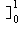
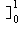
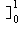

[d2(x2, ax)]2 =
 (x2 - ax)2 dx = [x5/5 - ax4/2 + a2x3/3 = a2/3 - a/2 + 1/5
(x2 - ax)2 dx = [x5/5 - ax4/2 + a2x3/3 = a2/3 - a/2 + 1/5and we can differentiate to find where this is a minimum ⇒ 2a/3 - 1/2 = 0 ⇒ a = 3/4 = 0.75
To find the distance between the two curves in the metric d2 we have:
[d2(x2, ax)]2 = (x2 - ax)2 dx = [x5/5 - ax4/2 + a2x3/3 = a2/3 - a/2 + 1/5
and we can differentiate to find where this is a minimum ⇒ 2a/3 - 1/2 = 0 ⇒ a = 3/4 = 0.75